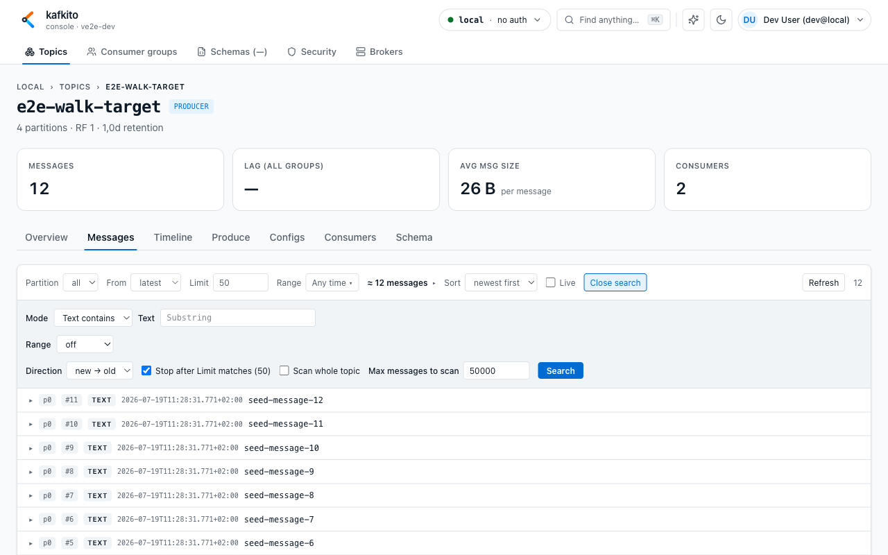
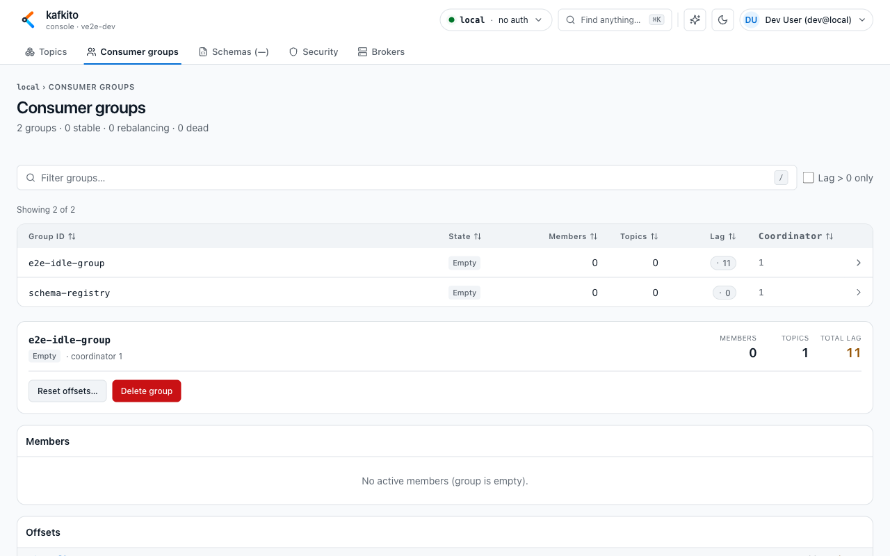
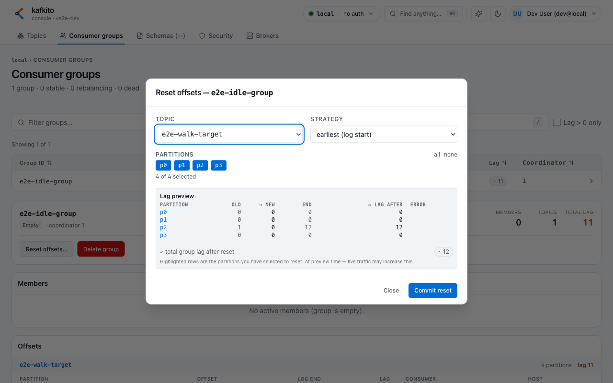
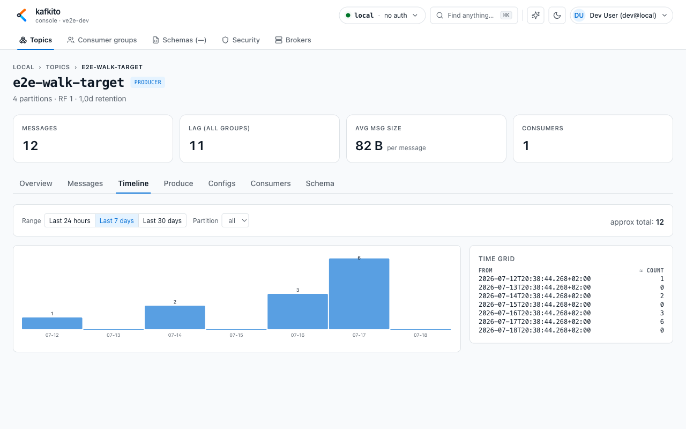

Typical UI workflows¶
Workflow 1: Find a message in a topic¶
What do I see?
In the topic Messages tab: partition, start-point, limit, range controls, and the Search panel.
What can I do?
1. Open Topics → Topic-Name → Messages.
2. Optionally scope partition, set From (latest, oldest, offset), and choose a range.
3. Open Search.
4. Use Mode = Text contains for quick searches, or switch to JSONPath, XPath, or JavaScript.
5. Enter search value and run Search.
6. Use Search more → when scanning larger ranges.
Examples: searching on two fields (UI)
Use the UI controls (Mode / Path / Operator / Value) — no API calls needed for everyday use. Steps:
- Open Topics → select topic → Messages → Search.
- Set Mode to either
JavaScript(recommended) orJSONPath(alternative). - Paste the expression below into the Search value field and click Search.
JavaScript (recommended — easiest for object checks):
- Mode: JavaScript
- Search value (paste exactly):
// find unpaid invoices for CUST-123
parsed.type === 'invoice' && parsed.customerId === 'CUST-123' && parsed.status === 'UNPAID' && parsed.totalAmount > 1000 && parsed.currency === 'USD'
Why JS: the UI passes the parsed JSON object as parsed, so field access and boolean logic are straightforward. The UI will show matched records when the expression evaluates to true.
JSONPath (alternative — when you prefer path expressions):
- Mode: JSONPath
- Operator: exists
- Path (paste into Path field):
$..[?(@.type=='invoice' && @.customerId=='CUST-123' && @.status=='UNPAID' && @.totalAmount>1000 && @.currency=='USD')]
Notes:
- JSONPath filters select nodes; use exists to match messages where the expression finds at least one node.
- JavaScript mode is more robust for complex predicates and has access to: key, value (raw string), parsed (JSON object or null), headers, partition, offset, timestampMs.
- For scripting and automation, the API endpoint is documented under the API reference: /API/#search — use that when you need curl/snippets or to integrate searches into scripts.
When should I use this?
Use it to find specific IDs, header patterns, or payload fields in live or historical streams.
Expected result
You get matching records with partition/offset/timestamp and can inspect payload immediately.

Workflow 2: Check and narrow down consumer lag¶
What do I see?
Under Consumer groups, you see a group list (State, Members, Topics, Lag) and a detail panel for selected group.
What can I do?
1. Open Consumer groups.
2. Filter by group ID or enable Lag only.
3. Select a group to open details.
4. In Offsets, compare Offset, Log end, and Lag per topic/partition.
5. Jump to affected topic directly from detail links.
When should I use this?
Use it when backlog grows or it is unclear whether lag is localized or widespread.
Expected result
You can identify whether lag is global or concentrated in specific topics/partitions.

Workflow 3: Understand offsets by cross-checking Messages¶
What do I see?
In group detail, committed offsets per partition; in topic Messages, the offset start mode.
What can I do?
1. In Consumer groups, open the affected group and note lagging partition/offset context.
2. Open the linked topic and go to Messages.
3. Set From = offset and enter the offset you want to inspect.
4. Select matching partition (or all for broader comparison).
5. Review records around that offset.
When should I use this?
Use it when you need to translate lag numbers into concrete records before/after consumer position.
Expected result
You can connect abstract lag metrics to specific message context for troubleshooting.
Workflow 4: Set or reset committed consumer offsets¶
What do I see?
In Consumer groups detail, you get the Reset offsets… action (enabled only for Empty/Dead groups) and a modal with strategy + partition selection.
What can I do?
1. Open Consumer groups and select the target group.
2. Ensure group state is Empty or Dead (otherwise reset is blocked).
3. Click Reset offsets….
4. Choose Topic and Strategy (earliest, latest, specific offset, timestamp, shift-by).
5. Select partitions to update.
6. Review Lag preview before commit.
7. Click Commit reset and confirm.
When should I use this?
Use it when you intentionally need to replay, skip, or realign consumption for a group.
Expected result
Committed offsets change for selected partitions and group lag is recalculated.

Workflow 5: Check message volume over time (Timeline)¶
What do I see?
In topic detail Timeline, you get a bar chart and time grid with approximate message counts per time slot.
What can I do?
1. Open Topics → Topic-Name → Timeline.
2. Select range preset (Last 24 hours, Last 7 days, Last 30 days).
3. Optionally scope a specific partition.
4. Inspect bars and the time grid to see when traffic peaked.
When should I use this?
Use it to answer “when did traffic increase/decrease?” before digging into individual records.
Expected result
You can quickly identify low/high traffic windows and correlate them with lag or incidents.
